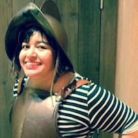

Udacity Portfolio

Interested in my professional experience?
Resume
LinkedIn
Portfolio Projects
Project One: Build a Portfolio Site
► Create a responsive web page from a PDF mockup
► Project was built with HTML, CSS, and Bootstrap
Project Two: Interactive Resume
► Demonstrate mastery of JavaScript by working through different control flow challenges
► Project was built with JavaScript and jQuery
Project Three: Arcade Game Clone
► Add player characters and enemies to a Frogger clone
► Project was built with Object-Oriented JavaScript and HTML5 Canvas
Project Four: Web Optimization
► Resolve performance and optimization-related issues on a given website
► Project was built using CSS, JavaScript, and Google Developer tools
Project Five: Neighborhood Map
► Create an interactive, responsive map of a local neighborhood
► Project was built with HTML, CSS, JavaScript, Bootstrap, KnockoutJS, the Google Maps API, and the Foursquare API
Project Six: Feedreader Testing
► Evaluate the functionality of JavaScript in a web-based RSS app by writing different development-driven tests
► Project was built using Jasmine's behavior-driven development framework
Project Repos
Project One: Build a Portfolio Site
Project Two: Interactive Resume
Project Three: Arcade Game Clone
Project Four: Web Optimization
Project Five: Neighborhood Map
Project Six: Feedreader Testing